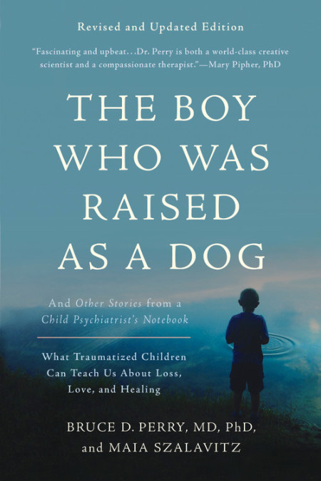

Michael Hempseed
Author
TEDx Speaker
Professional Speaker
Business Owner
Writer
Videos and Books
- This page is being used by doctors, counselling and social work students, teachers, health & safety companies and many others to further their professional development.
- Most of these books are also available as audible books on www.audible.com
- Trauma Resources
- Sleep Resources
- Other Psychology Topics
- Nadine Burke Harris
- Dr Burke-Harris gives a brief overview of the Adverse Childhood Experiences Study. She discusses the link between untreated childhood trauma and early mortality.
- Dr Bruce Perry, MD, PhD - The Child Trauma Academy
- Bessel van der Kolk
- A 100 minute summary of his must read book, The Body Keeps the Score: Brain, Mind, and Body in the Healing of Trauma
- Tricia Walsh
- Eye movement may be able to heal our traumas
- Leslie Morgan Steiner
- Why do people stay in abusive relationships
- Ken Clearwater - Male survivor of sexual abuse
- Dr Bruce Perry - Born for Love: Why Empathy is Endangered — and Essential
- Dr. Gabor Maté on The Connection Between Stress and Disease
- Mark Wolynn - It Didn't Start With You, Healing Inter-generational Trauma
- Melissa Walker - Art can heal PTSD's invisible wounds
- The Body Keeps the Score:
- Brain, Mind, and Body in the Healing of Trauma
- by Bessel van der Kolk M.D.
- The Deepest Well:
- Healing the Long-Term Effects of Childhood Adversity
- by Nadine Burke Harris M.D.
- It Didn't Start With You:
- How Inherited Family Trauma Shapes Who We Are
- and How to End the Cycle
- by Mark Wolynn
- In An Unspoken Voice:
- How the Body Releases Trauma
- And Restores Goodness
- by Peter A. Levine, PhD
- The Boy Who Was Raised as a Dog:
- What Traumatized Children Can Teach Us
- About Loss, Love and Healing 
- by Bruce D. Perry, MD, PhD, and Maia Szalavitz
- When The Body Says No:
- The Cost of Hidden Stress
- by Gabor Maté
Books and Further Reading